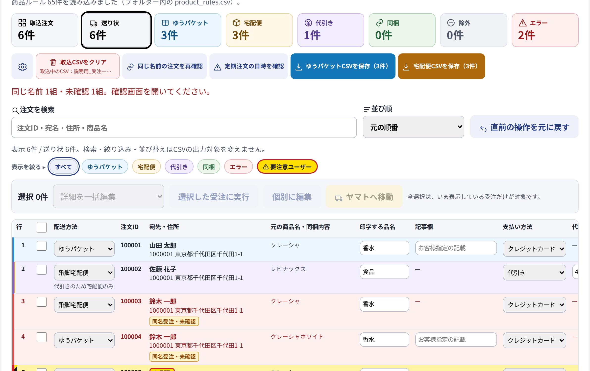
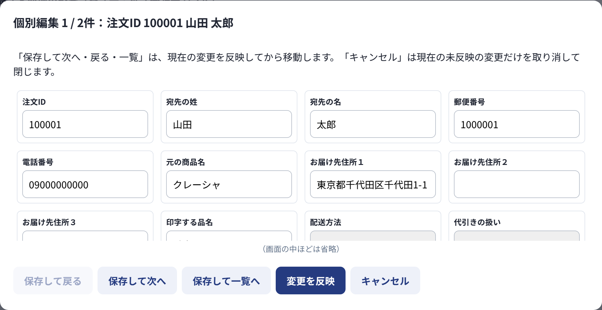
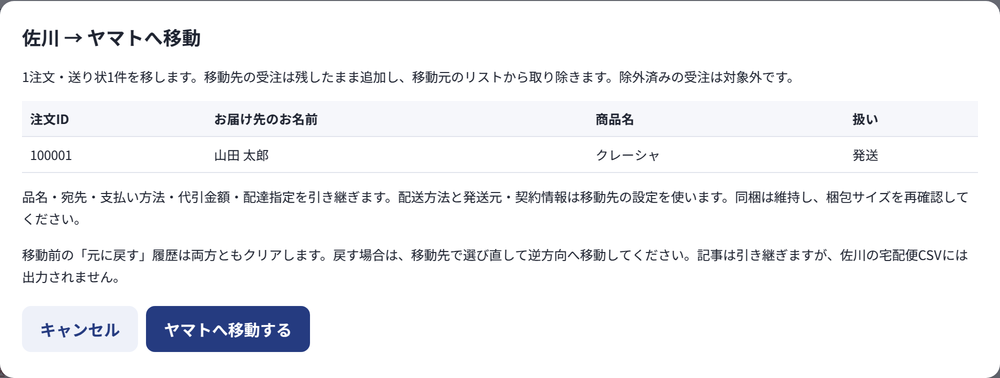

配送別の件数を把握
取り込んだ注文数や配送方法ごとの件数、確認が必要な注文を一覧の上部で確認できます。
ECの注文をまとめて確認・修正し、佐川急便・ヤマト運輸の送り状システムへ取り込むファイルを作る、Windows用の業務アプリです。
注文管理システムから出力したファイルを読み込みます。
配送方法を振り分け、宛先・品名・同梱などを確認・修正します。
佐川・ヤマトの送り状システムへ取り込める形式で保存します。

取り込んだ注文数や配送方法ごとの件数、確認が必要な注文を一覧の上部で確認できます。
検索や絞り込みで対象を探し、宛先・配送方法・送り状に記載する品名などを調整できます。
配送会社に合わせた形式で保存します。各社のシステムに取り込んで、送り状の発行へ進めます。
注文データの整理や配送方法の振り分け、出力前の確認をアプリにまとめました。導入前に1時間〜1時間半かかっていた業務が、30分以内で終わるようになりました。
手作業でデータを整理・確認
アプリでまとめて処理・確認
日々の実務での導入前後比較。削減した時間を、制作や運営の改善に使えるようになりました。
ECの発送準備では、商品の種類や個数、支払い方法によって配送方法が変わります。同じ宛先への注文をまとめるか、希望の日時をどう扱うかなど、人が確認する必要のある内容もあります。
こうした作業を毎回ファイル上で処理する負担を減らすために制作しました。自動化できる処理と確認が必要な判断を分け、画面上でまとめて扱えるようにしています。
注文を選んで、宛先・配送方法・品名などを修正できます。同じ内容をまとめて変更する操作にも対応し、ファイルを一から作り直す手間を減らします。

一部の注文を別の配送会社で発送したい場合は、対象を選んで移動できます。元の注文情報を引き継ぎ、移動先で配送内容を確認してから出力します。

日々の発送作業を行う中で、必要だと感じて自分で企画・制作したアプリです。課題の整理、仕様や画面の設計、制作、動作確認、導入、改修、操作ガイドの作成まで、すべて一人で進めています。制作にはAIも活用し、実際の業務で使いながら改善を続けています。
現在掲載しているのは、Windows用アプリを作成するためのソース一式です。完成済みの.exeは含まれていません。
作成時はWindows・Node.js・インターネット接続が必要です。ZIP内のREADMEに手順を記載しています。公開用セットには顧客データを含めていません。Windows上でのビルドは今回未検証です。
このツールは取込ファイルを作成します。配送会社への自動登録や直接印刷は行いません。